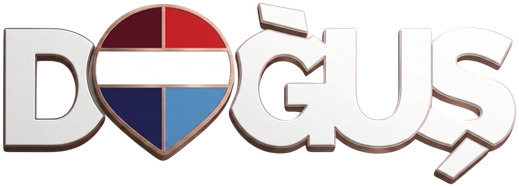

<!DOCTYPE html>
<html lang="tr"><head><meta charset="UTF-8"><meta name="viewport" content="width=device-width,initial-scale=1">
<title>Sizlerden Gelenler (yeni tasarım)</title>
<meta name="robots" content="noindex">
<link rel="preconnect" href="https://fonts.googleapis.com"><link rel="preconnect" href="https://fonts.gstatic.com" crossorigin>
<link href="https://fonts.googleapis.com/css2?family=Marcellus&display=swap" rel="stylesheet">
<style>
/* Umut'un Canva tasarımı (DAHZsGrBZsc) 1080x1920 ölçüleriyle birebir. Başlık bloğu Canva çıktısından alındı (assets/sizlerden/yeni/baslik.png). */
*{box-sizing:border-box;margin:0;padding:0}
body{background:#1a1a1a;color:#fff;font-family:'Marcellus',serif;display:flex;flex-wrap:wrap;gap:30px;padding:30px}
.slide{width:1080px;height:1920px;position:relative;overflow:hidden;flex:none;background:#111}
.slide.feed{height:1440px}
.ab{position:absolute}
.zemin{left:0;top:0;width:1080px;height:1920px}
.foto{overflow:hidden}
.foto img{position:absolute}
.logo{left:92.2px;top:106.2px;width:312.2px;filter:drop-shadow(0 4px 10px rgba(0,0,0,.25))}
.baslik{left:70px;top:405px;width:470px;height:470px}
.sh{text-shadow:0 3px 12px rgba(0,0,0,.30)}
.kutu{left:84.27px;top:1351.69px;width:605.37px;height:64.44px;background-size:100% 100%}
.gd{left:89.4px;top:1351.8px;width:595.17px;font-size:53.62px;line-height:64.28px;text-align:center;white-space:nowrap}
.cizgi{height:1px;background:#fff}
.ad{left:85.57px;top:1446.81px;font-size:130.66px;line-height:155.87px;white-space:nowrap}
.soyad{left:93.46px;top:1577.81px;font-size:86.95px;line-height:103.72px;white-space:nowrap}
.alt{left:98.46px;top:1792.53px;font-size:38.95px;line-height:46.21px;white-space:pre}
.kaydir{left:776.71px;top:1788.9px;font-size:38.95px;line-height:46.21px;display:flex;align-items:center;gap:14px;white-space:nowrap}
.kaydir svg{width:46px;height:20px}
.stars{display:flex;gap:14px}.stars svg{width:62px;height:62px;filter:drop-shadow(0 3px 6px rgba(0,0,0,.35))}
.yorum-govde{left:96px;right:96px;display:flex;flex-direction:column}
.metin{font-size:58px;line-height:1.38}
</style></head><body>
<script>
const Q=new URLSearchParams(location.search);
const FMT=Q.get('fmt')==='feed'?'feed':'story', H=FMT==='feed'?1440:1920;
const A='assets/sizlerden/', ZEMIN={R:A+'yeni/zemin-kirmizi.png',B:A+'yeni/zemin-mavi.png'};
const KUTU={R:A+'kutu-lacivert-v2.png',B:A+'kutu-kirmizi-v2.png'};   // kutu her zaman diğer renkte
// Canva'daki gibi: ilk harf büyük, kalanı küçük büyük harf (Türkçe İ noktalı)
const kk=s=>esc(s.charAt(0))+'<span style="font-size:.74em;letter-spacing:.02em">'+esc(s.slice(1).toLocaleUpperCase('tr'))+'</span>';
const esc=s=>String(s??'').replace(/[&<>"]/g,c=>({'&':'&amp;','<':'&lt;','>':'&gt;','"':'&quot;'}[c]));
const STAR='<svg viewBox="0 0 24 24"><path fill="#FFD60F" d="M12 1.8l3.1 6.6 7.2.9-5.3 5 1.4 7.1L12 17.9l-6.4 3.5 1.4-7.1-5.3-5 7.2-.9z"/></svg>';
const ok=c=>`<svg viewBox="0 0 46 20"><path d="M0 10h36" stroke="${c}" stroke-width="4"/><path d="M33 2l13 8-13 8z" fill="${c}"/></svg>`;
// Gönderi (1080x1440): story düzeni 300px yukarı kaydırılır, logo/başlık/alt yazı pencereye sığacak şekilde yer değiştirir
// Kişi fotoğrafı %80 (Umut 2 Kas): saç çizgisi ve yüz ortası (x 770) yerinde kalır; foto sayfa altına yetişmezse alt kenar yumuşak silinir
const FS=0.8;
const DY=FMT==='feed'?-300:0, DN=FMT==='feed'?-360:0;   // DN: kutu+isim bloğu
const y=(v,feedV)=>FMT==='feed'?(feedV!==undefined?feedV:v+DY):v;
const alt=(kc,kaydir=true)=>`<div class="ab alt sh" style="top:${y(1792.53,1345)}px">RE/MAX Doğuş  0216 315 15 15</div>`+
  (kaydir?`<div class="ab kaydir sh" style="top:${y(1788.9,1341)}px;color:${kc}">Kaydır ${ok(kc)}</div>`:'');
const logo=()=>``;

function foto(k){
  // Kişi küçük (FS), ama foto her zaman sayfanın altına oturur: gerekirse biraz aşağı iner (en çok KAY px), yetmezse daha az küçülür
  const [el,ib]=[k.el,k.ib], ust=el[1]+DY, B=ib[0]+ib[3]-22, KAY=FMT==='feed'?40:90;
  let kay=Math.min(KAY,Math.max(0,H-(ust+22+B*FS)));
  const sc=Math.max(FS,(H+2-(ust+22+kay))/B);
  const sol=k.solma?';-webkit-mask-image:linear-gradient(#000 82%,transparent);mask-image:linear-gradient(#000 82%,transparent)':'';
  const U=400;  // üstte kırpma olmasın (topuz/saç kesilmesin)
  return `<div class="ab foto" style="left:${el[0]}px;top:${ust-U}px;width:${el[2]}px;height:${U+Math.max(el[3],ib[0]+ib[3])}px;transform-origin:${770-el[0]}px ${U+22}px;transform:translateY(${kay}px) scale(${sc})"></div>`;
}
function kapak(d,k){
  const [el,ib]=[k.el,k.ib];
  return `<div class="slide ${FMT}" data-ad="kapak">

${foto(k)}
${logo()}

<div class="ab kutu" style="top:${1351.69+DN}px;background-image:url(${ZEMIN[k.renk==='R'?'B':'R']});background-size:1080px 1920px;background-position:-84.27px ${-(1351.69+DN-DY)}px"></div>
<div class="ab gd sh" style="top:${1351.8+DN}px">Gayrimenkul Danışmanı</div>
<div class="ab cizgi" style="left:84.27px;top:${1430.8+DN}px;width:605.37px"></div>
<div class="ab ad sh" style="top:${1446.81+DN}px">${kk(d.ad)}</div>
<div class="ab soyad sh" style="top:${1577.81+DN}px">${esc(d.soyad)}</div>
${alt(k.kaydir||'#fff')}</div>`;
}

// Yorum sayfası: kapağın tersi renk. Metin sığmazsa sayfalara bölünür.
function yorumSayfa(d,renk,m,parca,i,n){
  const bas=(m.yazar||'?').trim().charAt(0).toLocaleUpperCase('tr');
  const daire=renk==='B'?'linear-gradient(160deg,#910B19,#DC1C2E 45%,#FB5160)':'linear-gradient(160deg,#0b1a4a,#1f3a8a 55%,#3456b5)';
  const ust=FMT==='feed'?250:340, altY=FMT==='feed'?1290:1730;
  return `<div class="slide ${FMT}" data-ad="yorum">

${logo()}
<div class="ab yorum-govde" style="top:${ust}px;bottom:${H-altY}px">
 <div class="sh" style="font-size:52px;line-height:1.1">${esc(d.ad+' '+d.soyad)} için</div>
 <div class="cizgi" style="width:240px;margin-top:26px;opacity:.6"></div>
 <div class="orta" style="flex:1;min-height:0;overflow:hidden;display:flex;flex-direction:column;justify-content:center">
 <div style="font-size:250px;line-height:.62;height:${FMT==='feed'?90:120}px;flex:none;color:rgba(255,255,255,.35)">“</div>
 <div class="metin sh">${esc(parca)}${i<n-1?' …':''}</div>
 ${i===n-1?`<div style="display:flex;align-items:center;gap:30px;margin-top:48px;padding-top:36px;border-top:1px solid rgba(255,255,255,.35);flex:none">
  <div style="width:110px;height:110px;border-radius:50%;background:${daire};display:flex;align-items:center;justify-content:center;font-size:62px;flex:none">${esc(bas)}</div>
  <div><div class="sh" style="font-size:54px;line-height:1.1">${esc(m.yazar)}</div><div class="stars" style="margin-top:12px;transform:scale(.72);transform-origin:left">${STAR.repeat(m.puan||5)}</div></div>
 </div>`:''}
 </div>
</div>
${alt('#fff')}</div>`;
}

function tesekkur(d,renk){
  return `<div class="slide ${FMT}" data-ad="tesekkur">

${logo()}
<div class="ab sh" style="left:96px;right:96px;top:0;bottom:${FMT==='feed'?60:0}px;display:flex;flex-direction:column;justify-content:center">
 <div style="font-size:${FMT==='feed'?124:140}px;line-height:1.05">${kk('Teşekkür')}<br>${kk('Ederiz')}</div>
 <div class="cizgi" style="width:344px;margin:44px 0;opacity:.8"></div>
 <div style="font-size:${FMT==='feed'?50:56}px;line-height:1.45;max-width:880px">Güveniniz en büyük referansımız. Satış, kiralama ve değerleme süreçlerinizde ${esc(d.ad+' '+d.soyad)} ve RE/MAX Doğuş ekibi yanınızda.</div>
 <div style="margin-top:64px;align-self:flex-start;padding:24px 58px;border:2px solid #fff;border-radius:60px;font-size:52px">Hemen arayın · 0216 315 15 15</div>
</div>
${alt('#fff',false)}</div>`;
}

// Metni sayfalara böl: önce tek sayfada 58px'ten 44px'e kadar küçült, sığmazsa 44px'te cümle sonundan böl
function parcala(d,renk,m){
  const t=document.createElement('div'); t.style.cssText='position:absolute;left:-9999px;top:0';
  document.body.appendChild(t);
  const sigar=(metin,fs,son)=>{t.innerHTML=yorumSayfa(d,renk,m,metin,son?0:0,son?1:2);const k=t.querySelector('.orta');k.querySelector('.metin').style.fontSize=fs+'px';k.style.justifyContent='flex-start';return k.scrollHeight<=k.clientHeight;};
  for(let fs=70;fs>=44;fs-=2) if(sigar(m.metin,fs,true)){t.remove();return {fs,parcalar:[m.metin]};}
  const w=m.metin.split(' '),p=[];let i=0;
  while(i<w.length){let j=i+1;
    while(j<=w.length&&sigar(w.slice(i,j).join(' '),44,j>=w.length))j++;
    j=Math.max(i+1,j-1);
    // mümkünse cümle sonunda kes
    if(j<w.length){for(let q=j;q>i+5;q--)if(/[.!?]$/.test(w[q-1])){j=q;break;}}
    p.push(w.slice(i,j).join(' '));i=j;}
  // sayfaları dengele: aynı sayfa sayısında kelimeleri eşit böl (mümkünse cümle sonunda)
  const N=p.length;
  if(N>1){const hedef=w.length/N,q=[];let bas=0,ok=true;
    for(let k=1;k<=N;k++){let son=k===N?w.length:Math.round(hedef*k);
      if(k<N){for(let d=0;d<=Math.round(hedef*.2);d++){if(/[.!?]$/.test(w[son-1-d]||'')){son=son-d;break;}if(/[.!?]$/.test(w[son-1+d]||'')){son=son+d;break;}}}
      const parca=w.slice(bas,son).join(' ');if(!sigar(parca,44,k===N)){ok=false;break;}q.push(parca);bas=son;}
    if(ok){t.remove();return {fs:44,parcalar:q};}}
  t.remove();return {fs:44,parcalar:p};
}

(async()=>{
  const veri=await (await fetch('data/sizlerden-kapaklar.json?v='+Date.now())).json();
  const id=Q.get('danisman')||'gizem', d=veri[id];
  if(!d){document.body.textContent='Danışman yok: '+id;return;}
  const k=d.kapaklar[+(Q.get('kapak')||0)%d.kapaklar.length];
  let m={yazar:Q.get('yazar')||'Ayşe T.',puan:+(Q.get('puan')||5),metin:Q.get('metin')||'Örnek yorum metni.'};
  if(Q.get('yorum')){try{const y=(await (await fetch('data/google-yorumlar.json?v='+Date.now())).json()).yorumlar.find(r=>r.id===Q.get('yorum'));
    if(y){const p=String(y.yazar||'').trim().split(/\s+/);m={yazar:p.length<2?p[0]:p.slice(0,-1).join(' ')+' '+p[p.length-1].charAt(0).toLocaleUpperCase('tr')+'.',puan:y.puan,metin:y.metin.replace(/\s+/g,' ').trim()};}}catch(e){}}
  if(Q.get('yazar'))m.yazar=Q.get('yazar');
  await document.fonts.load('40px Marcellus');
  const ters=k.renk==='R'?'B':'R';
  const {fs,parcalar}=parcala(d,ters,m);
  let html=kapak(d,k);
  parcalar.forEach((p,i)=>html+=yorumSayfa(d,ters,m,p,i,parcalar.length));
  html+=tesekkur(d,k.renk);
  document.body.insertAdjacentHTML('beforeend',html);
  document.querySelectorAll('.metin').forEach(x=>x.style.fontSize=fs+'px');
  await Promise.all([...document.images].map(i=>i.complete?0:new Promise(r=>{i.onload=i.onerror=r;})));
  document.body.dataset.ready=1;
})();
</script>
</body></html>
